Asmild
Höhe: 120 cm
Breite: 71 cm
Runenhöhe: 4 - 18 cm
Runeninschrift :
Thorgun(d), Tochter von Thorgot, (der war) ein Sohn von Thjodulv, setzte diesen Stein für ihren Gatten Bose, tipita man ...

54 - Asmild - Letztes Update 14.09.2025
Listennummer : DR kein / DK MJy 28
| Navidaten: 56.44679 9.42487 oder: Vinkelvej 16, 8800 Viborg |
Transliteration:
Seite A: þurkutr : þurkus : | tutiR : þkuþulfs : suna(R) | sati : stin : þąsi : iftiR : busa
Seite B: B uir sin : tiþita : mąn : muaR : h-... | : tutur :
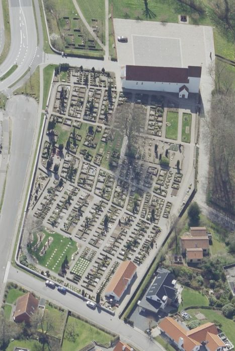
Das ist ein Luftfoto vom 18.04.2023 von Skråfoto das die Kirche von Asmild zeigt. Skråfoto ist eine Webanwendung, die von Klimadatastyrelsen weltweit kostenlos bereitgestellt wird - Freie Nutzung unter Beachtung der Lizenz: CC BY 4.0. Die Aufnahmen werden alle zwei Jahre erneuert und neben einer Senkrechtaufnahme wird ein Schrägbild aus jeder Himmelsrichtung angeboten, das man über eine Adresssuche aufrufen kann.
Dieser Runenstein wurde durch den Architekten des Nationalmuseum in Kopenhagen, C. G. Schultz (Peder Berthold Carl Georg Schultz - *29.08.1905 - 17.07.1958, Architekt und Archäologe)
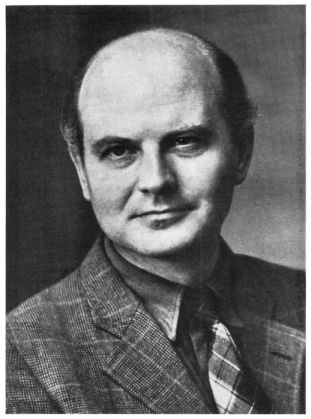
Bildquelle: KUML 1958 - Nachruf C. G. Schultz 1905-1958 - Lizenz: CC-BY-SAanlässlich einer Restaurierung im September 1950 in der uralten Klosterkirche (um 1060) von Asmild (bei Viborg) gefunden. Er lag außen an der Nordwand des Nordturms (um 1100) eingemauert, wo er über Jahrhunderte hinweg saß. Früher muss er dort sichtbar gewesen sein und wurde erst später verdeckt, da der Fußboden der Kirche ursprünglich ca. 1m tiefer lag.
Der Runenstein war zu einem Baustein zurechtgehauen worden, um in der Kirchenmauer eingesetzt zu werden. Die Inschrift, die sehr tief und deutlich gehauen wurde, ist auf zwei Seiten des Steines angebracht. In der Inschrift werden drei Generationen erwähnt. Dem Runenritzer unterlief in dem Namen "Thjodulv" ein Schreibfehler. Er ritze eine k-Rune anstatt einer i-Rune.
Die Umschreibung tipita man - ein Ausdruck, den man von keinem anderen Runenstein her kennt - konnte bisher nicht sicher gedeutet werden. Lisbeth M. Imer (*1973, Runologin am Nationalmuseum Kopenhagen) führt in ihrem Buch, "Danmarks Runesten - en fortælling", S. 245 aus, dass damit möglicherweise jemand betitelt wurde, der dem Häuptling Neuigkeiten berichtete. Die Inschrift wird in die Zeit 970 - 1020 datiert. Sie verläuft in insgesamt fünf Linien, die alle von unten nach oben gelesen werden. Sie beginnt auf der Breitseite von links und verläuft nach rechts. Danach wird sie auf der schmalen Seite ebenfalls von links nach rechts fortgesetzt.
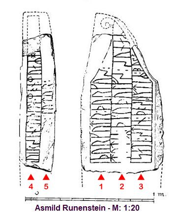
Bildquelle: siehe unten - Leserichtung von mir eingefügtDer Runenstein steht im Waffenhaus, das im Sommerhalbjahr Montags-Freitags 07.30 - 15.30 Uhr geöffnet ist. Im Winterhalbjahr kann man sich gerne an den Graver wenden, wenn er sich auf dem Kirchhof aufhält (ohne Gewähr!).
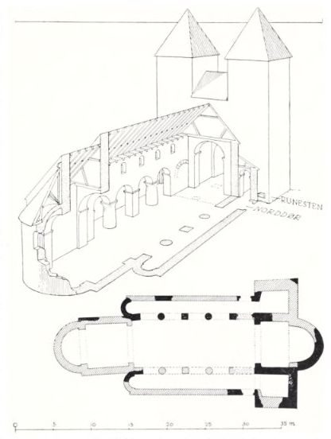
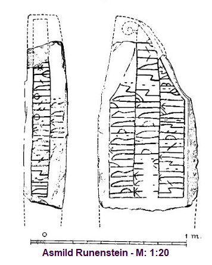
Diese beiden Zeichnungen sind dem Artikel "Kirken og runestenen i Asmild" - C. G. Schultz, Fra Nationalmuseets Arbejdsmark, 1951, S. 59-68, entlehnt.
Diese sw Aufnahmen hat Erik Moltke (*04.04.1901 - 19.10.1984, Runologe, Historiker - link-LIVES)
 Bildquelle: Scan von Buchumschlag "Runerne i Danmark og ders
oprindelse" - Erik Moltke - 1976 - Lizenz:
CC-BY-SA
Bildquelle: Scan von Buchumschlag "Runerne i Danmark og ders
oprindelse" - Erik Moltke - 1976 - Lizenz:
CC-BY-SA
wohl unmittelbar nach der Entdeckung / Bergung im September 1950 aufgenommen (Teilweise Runenzeichen nachgefahren).
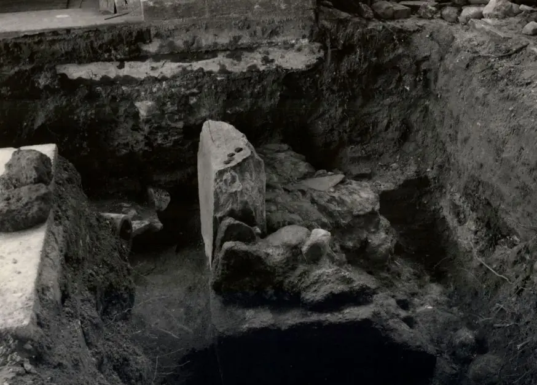
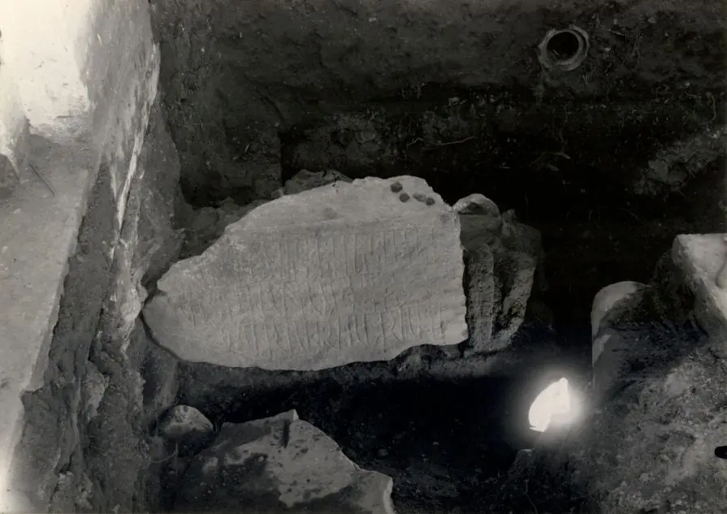
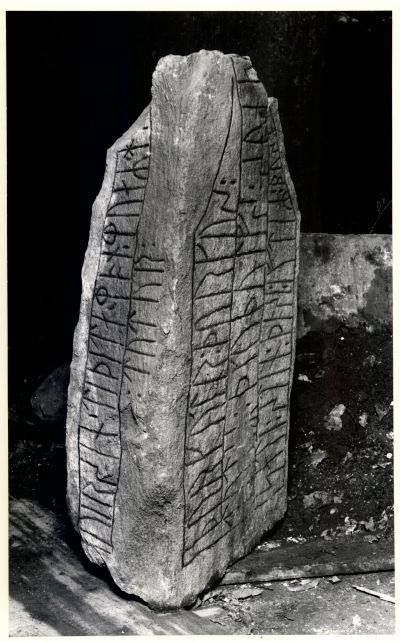
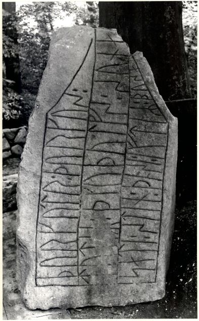
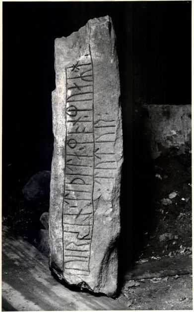
Quelle: Digitale Sammlung des Nationalmuseums Kopenhagen entnommen - Lizenz: CC-BY-SA
Im Vorfeld zu dem 2016 erschienenen Buch von Lisbeth M. Imer (*1973, Runologin am Nationalmuseum Kopenhagen) "Danmarks Runesten - en fortælling" reiste sie mit dem Fotografen Roberto Fortuna zur Bestandsaufnahme durch die Lande. Dieser hat den Runenstein mit Schräglicht bei Dunkelheit aufgenommen und darüber wirklich herausragende Fotos erzielt. Diese Fotografien stammen vom 06.03.2012.
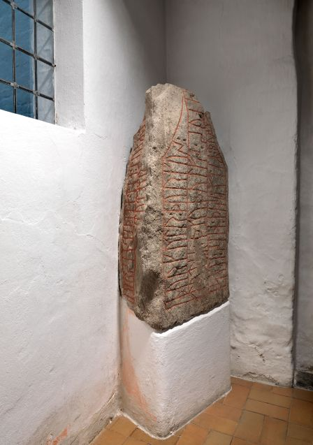
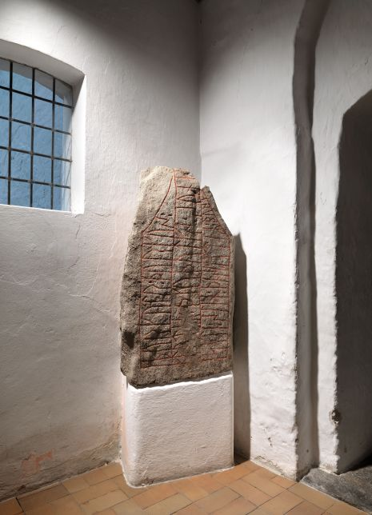
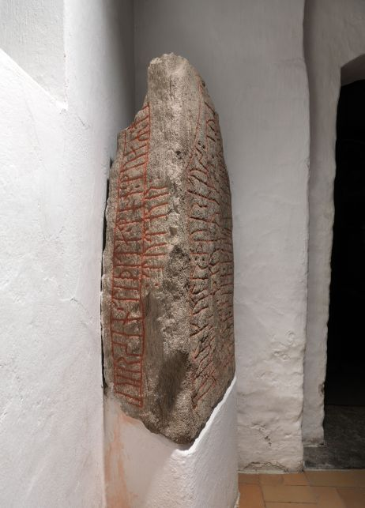
Quelle: Digitale Sammlung des Nationalmuseums Kopenhagen entnommen - Lizenz: CC-BY-SA
Meine Fotos zu diesem Runenstein habe ich am Mittwoch, 01.06.2022, im Rahmen meiner 2022er Jütland Wikinger Tour aufgenommen. Die Kirche war geöffnet und ich konnte auch einen Blick nach drinnen werfen. Da aber eine Beerdigung unmittelbar bevorstand - siehe Dannebrog auf Halbmast - habe ich von Fotos des Innenraums Abstand genommen (Über das Internet findet man da ja auch einiges).
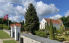 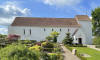 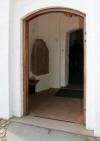 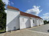 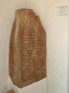 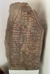 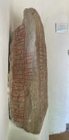 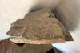


Über die Webseite der Kirche kann man sich - in dänischer Sprache - einen umfassenden Bericht zur Historie, der auch mit einigen Fotos unterlegt ist, zu Gemüte führen.
Das Foto im linken Frame habe ich Ende der 1980er oder Anfang der 1990er aufgenommen. Dies war erst mein zweiter Besuch in Asmild.
Den Eintrag zu diesem Runenstein aus der dänischen Runen Datenbank im Internet kann man hier abrufen.
Die Informationen in "Fund og Fortidsminder" zu dem Runenstein finden sich hier. Darin ist inzwischen dieser Zustandsbericht des Steinrestaurators Leif Vognsen aus dem Jahr 2018 eingebettet.
Über diesen Link finden sich zu dem Runenstein Informationen des Forschungsprojektes "Runes" der Akademie der Wissenschaften zu Göttingen.
Literaturhinweise:
Kirken og runestenen i Asmild - C. G. Schultz - Fra Nationalmuseets Arbejdsmark, 1951 - S. 59-68
Asmild-runestenen. En foreløbig redegørelse - Erik Moltke - Fra Viborg Amt - 1951 - S. 5-18 (ab S. 170 in der pdf-Datei)
The Asmild Rune Stone - Erik Moltke - The American-Scandinavian Review 1953 - Nr. 41 - S. 222-227
Vejene før Viborg - Aage Lauritsen - Fra Viborg Amt, 40. årgang, 1975, S. 51- 98 / darin S. 94-95
Spor efter guldsmede fra vikingetiden i Viborg - ein Artikel zu dem Fund einer Patrize in Viborg, die vielleicht zur Anfertigung der Hornelund Schalenfibel genutzt wurde, die 1892 gefunden worden war.Über die Webseite "Digitale Samling" des Nationalmuseum in Kopenhagen kann man sich diese Ansicht des Asmild Kloster von 1839 von Rasmus Henrik Kruse (*07.08.1796 - 30.05.1877, Landschaftsmaler - link-LIVES - Heirat 21.12.1851)
 Bildquelle:
Det Kgl. Biblioteks billedsamling - Lizenz:
Public Domain
Bildquelle:
Det Kgl. Biblioteks billedsamling - Lizenz:
Public Domain
jederzeit abrufen - Lizenz: Public Domain
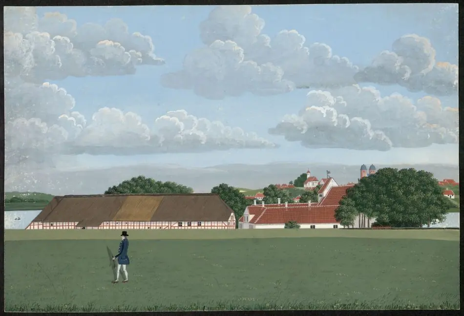